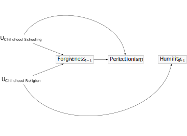
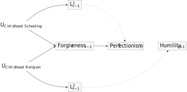

Elsewhere we describe our strategy for using three waves of panel data to identify causal effects. In this design, we used a “modified disjunctive cause criterion” for confounder selection.
Briefly in this approach for confounding adjustment we:
control for each covariate that is a cause of the exposure, or of the outcome, or of both; exclude from this set any variable known to be an instrumental variable; and include as a covariate any proxy for an unmeasured variable that is a common cause of both the exposure and the outcome (VanderWeele, Mathur, and Chen 2020, 441; VanderWeele 2019).
Here we describe a potential threat from confounding by over-adjustment, and describe how our confounding-control strategy meets this threat. Suppose we are interested in estimating the causal effect of perfectionism on humility. Suppose further that there is no causal relationship. Perfectionism is not causally associated with humility. Put differently, if we were to intervene on someone’s level of perfectionism this would not affect that person’s humility. In Figure 1 we represent the absence of a causal association by omitting an arrow from perfectionism to humility. Were we to collect data and model the effect of perfectionism on humility without any further co-variate adjustment Figure 1 implies the coefficient for perfectionism would be zero.
M-bias
In outcome-wide studies we include the indicators for the many outcomes of interest at baseline (\(t-1\)). This strategy helps to prevents confounding by blocking the backdoor path between the exposure variable and the outcome variable. However this strategy also invites bias from over-adjustment.
Suppose we condition on forgiveness. Suppose further that childhood schooling, an unmeasured cause, affects both forgiveness and perfectionism. Next, suppose that childhood religion, which is also unmeasured, affects both forgiveness and humility. By assumption, perfectionism is not causally associated with humility. Notice however that adjusting for forgiveness opens a back-door path from perfectionism to humility. This occurs because forgiveness is a collider confounder of childhood schooling and childhood religion. By including forgiveness, we open a path between these two unmeasured parameters which then opens an association from perfectionism to humility along the path. Figure 1 presents the problem.
\[perfectionism \to childhood~chooling \to childhood~religion \to humility\]
This type of over-adjustment bias called M-Bias. If only we had not included forgiveness our regression estimate we would have avoided counding. In our quest for perfection we have over-adjusted. By stratifying on forgiveness we must ask for it.
Seemingly uncontrollable confounding
It might seem as though we have an easy way out. Do not condition on forgiveness. However typically the data cannot tell us the true structure of causal relationships. We must rely on assumptions. What if, contrary to our previous assumptions, forgiveness were to cause (diminish) perfectionism? This seems theoretically plausible. An intervention that caused me to be more forgiving of others might also cause me to be more forgiving of myself. Under this new assumption, presented in Figure 2, confounding would appear to be out of control. If we do not adjust for forgiveness, there is an open path:
\[perfectionism \to forgiveness \to childhood religion \to humility\].
This is bad. It would seem we are trapped. If we adjust for forgiveness, the path described above is opened. We have not measured childhood schooling. Nor have we measured childhood religion. Again we are humbled.

The modified disjunctive cause criterion provides a way out
Recall, we have not measured childhood schooling. Nor have we measured childhood religion. Conditioning on either would enable us to block a back door path from exposure to outcome. However, the modified disjunctive criterion advises that we “include as a covariate any proxy for an unmeasured variable that is a common cause of both the exposure and the outcome.”

Figure 3 presents clarifies this application of the modified disjunctive criterion. On this graph, \(L^1_{t-1}\) fully mediates the path from childhood schooling to perfectionism. If \(L^1_{t-1}\) were measured, including it in our model, along with indicators of forgiveness, would block a backdoor path from perfectionism to humility. Also on this this graph, \(L^2_{t-1}\) fully mediates the path from childhood religion to humility. If \(L^2_{t-1}\) were measured, including it would be sufficient to block a backdoor path from perfectionism to humility. Again, the causal structure of the reality is unknown. By including in the set of measured confounders any \(\{l \in L^1_{t-1}\} \lor \{l \in L^2_{t-1}\}\) we may reduce or even eradicate confounding. Of course, this approach assumes that set of measured confounders as a whole does not introduce novel opportunities for M-bias. Over-adjustment is remains a theoretical possibility. The modified disjunctive criterion cannot escape theory. It rather guides us in the application of theory for strategies of confounding control.
Adjusting for both the exposure and outcome at baseline is a powerful strategy for confounding control.
Causal Crisis in Psychology Requires Time Series Data
Psychological science faces a casual crisis(Bulbulia 2022). This crisis will not be saved by causal graphs. Needed are at least three waves of repeated measures time-series data.
References
Reuse
Citation
@online{2022,
author = {},
title = {M-Bias: {Confounding} {Control} {Using} {Three} {Waves} of
{Panel} {Data}},
date = {2022-11-22},
url = {https://go-bayes.github.io/b-causal-lab/},
langid = {en}
}